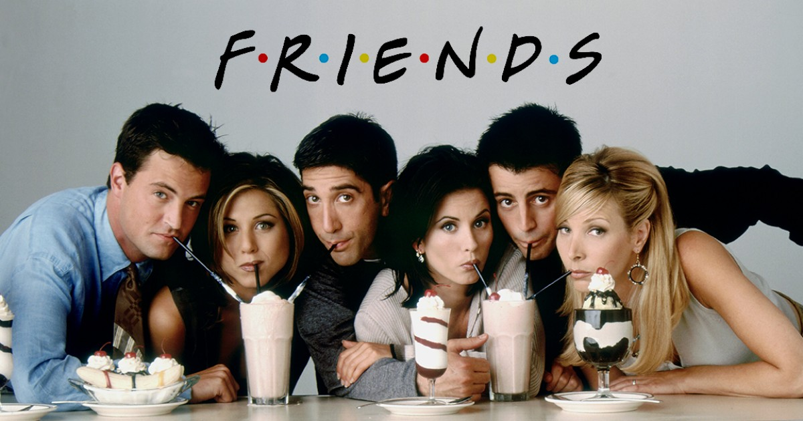
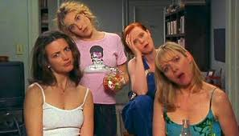
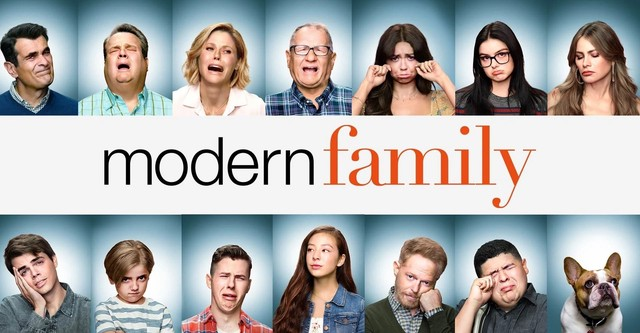

Hakkımda
Merhaba ben Zeynep. İzmirde yaşıyorum. Dokuz Eylül Karşılaştırmalı Edebiyat Bölümü mezunuyum. Kendimi Front-End alanında geliştirmek için Patika'yı takip ediyorum.
İgi Alanlarım
Boş vakitlerimde kitap okumaktan, doğada yürüyüş yapmaktan ve dizi izlemekten hoşlanırım.
Favori Dizilerim
- Friends
- Sex and The City
- Modern Family
Friends
Rachel Green düğününden kaçıp New York'ta bir restoranda aşçı olduğunu bildiği çocukluk arkadaşı Monica Geller'ı bulmaya gider. Rachel, Monica'nın evine yerleşir ve onun arkadaş grubuna katılır. Bu gruptakiler: ünlü olmaya çalışan aktör Joey Tribbiani, iş adamı Chandler Bing, masöz ve müzisyen Phoebe Buffay ve Monica'nın abisi, yeni boşanmış paleontolog Ross Geller'dır. Rachel ailesinin yardımı olmadan hayata yeniden başlamaya karar verir ve grubun sık sık gittiği, Manhattan'daki Central Perk adlı cafede garson olarak işe girer. Grup burası dışında en çok Monica ve Rachel'ın New York, West Village'teki apartman dairesinde ve karşı dairede yaşayan Chandler ve Joey'nin evinde vakit geçirir.
Sex And The City
Modern ve kariyer sahibi kadınların aşk ve seks hayatına bir bakıma ışık tutarken, bir yandan da bu kadınların gerçekte hayattan beklentilerinin ne olduğu konusunda küçük ipuçları vermektedir.
Modern Family
11 sezon boyunca yayınlanmış olan, komedi tarzında bir televizyon dizisi. Dizi, Jay Pritchett (Ed O'Neill) ve ailesinin yaşadığı olayları konu edinmiştir. Dizinin bazı sahnelerinde karakterler ile sahte belgesel formatında röportajlar yapılmaktadır.
